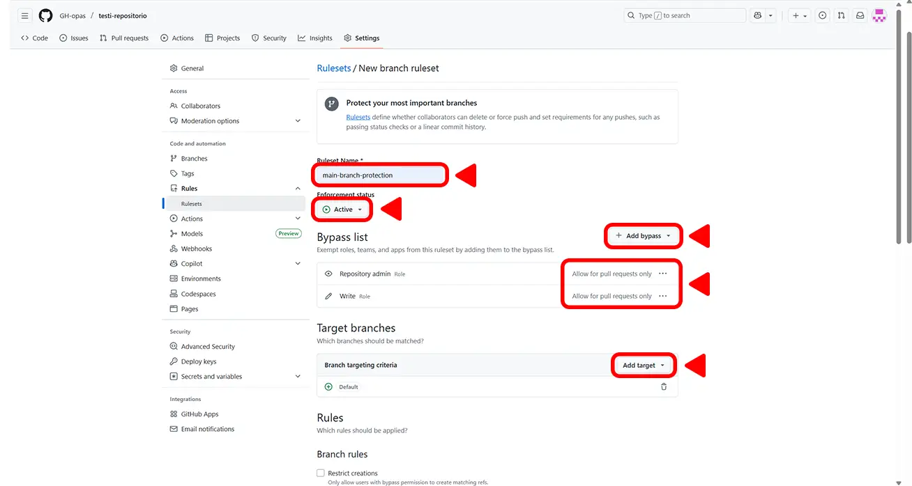
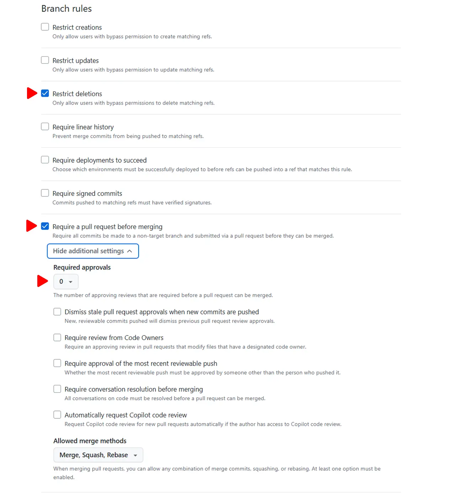
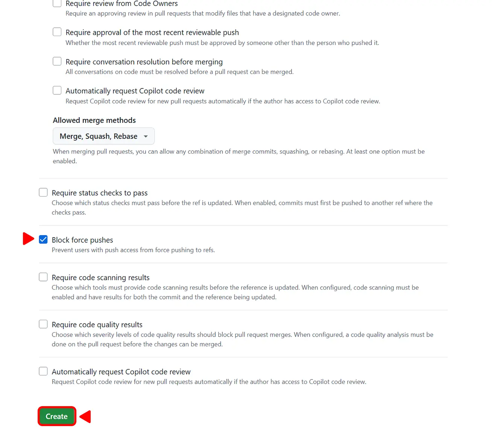
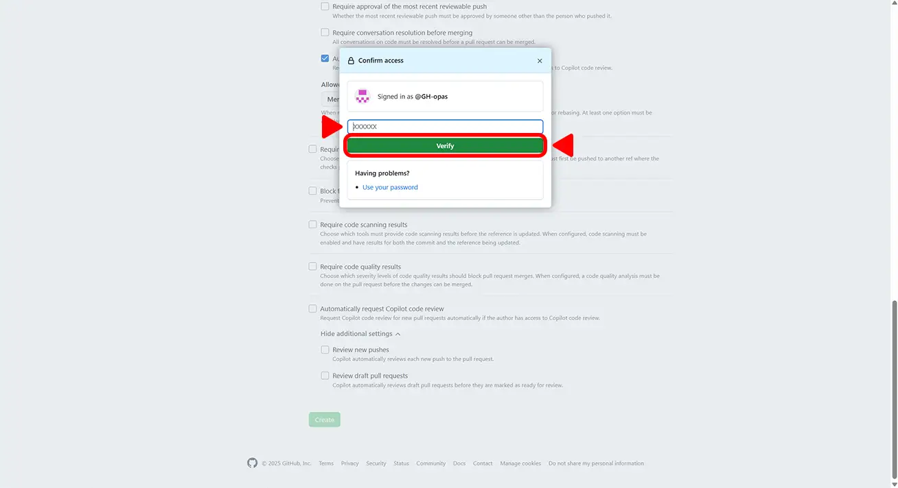
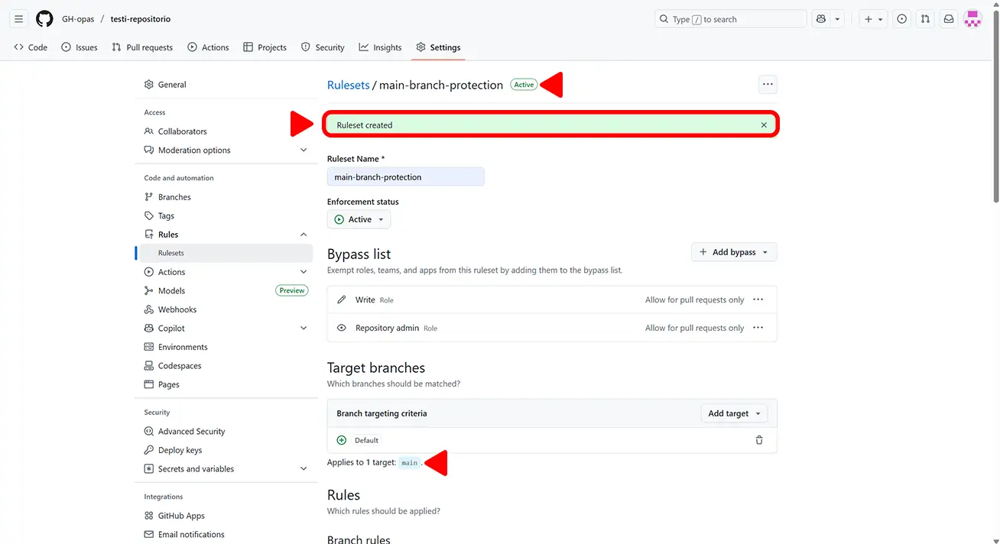

GitHub-repositorion asetuksista hallitaan projektin
näkyvyyttä, käyttäjien käyttöoikeuksia ja suojauksia. Oikein määritetyt
asetukset parantavat projektin tietoturvaa, ylläpidettävyyttä ja
yhteistyötä.
Tässä osiossa käydään läpi tärkeimmät asetukset, kuten repositorion
näkyvyyden muuttaminen, käyttäjien (collaborators) lisääminen,
haarojen suojaaminen (branch protection rules), sekä repositorion
poistaminen. Ehkä? Lisäksi tutustutaan muutamiin
hyödyllisiin perusasetuksiin, kuten oletushaaran määrittämiseen ja projektin
kuvaukseen.Ehkä?
Kun muutat GitHub-repositorion julkiseksi (Public),
koko sen sisältö ja
kaikki aiemmat commit-historiat tulevat kaikkien
nähtäville. Tämä koskee myös tiedostoja ja tietoja, jotka on
myöhemmin poistettu projektista.
Älä muuta repositoriota julkiseksi, jos se
sisältää tai on joskus sisältänyt arkaluontoisia
tietoja, kuten:
salasanoja, API-avaimia tai käyttöoikeustunnuksia,
henkilötietoja tai muuta luottamuksellista aineistoa,
maksullisia tai lisenssisuojattuja tiedostoja.
Julkiseksi muuttaminen sopii vain avoimen lähdekoodin projekteihin
tai työnäytteiksi tarkoitettuihin repositorioihin.
Julkiseksi muuttaminen sisältää monta vaihetta, joten vahingossa
tapahtuvaa näkyvyyden muuttamista ei tarvitse pelätä.
Varmista, että olet asetuksien General osiossa ja
scrollaa ikkunan alareunaan.
Asetuksien General osio.
Klikkaa Danger Zone osiosta Change Visibility nappia.
Näkyvyys asetuksen muuttaminen.
Klikkaa Vielä alle avautuvaa Change to public nappia.
Muuttaminen julkiseksi.
Vahvista vielä avautuvaan ruutuun, että haluat tehdä repositoriosta
julkisen klikkaamalla
I want to make this repository public nappia.
Vahvistus repositorion muuttamisesta julkiseksi.
Vahvista vielä, että olet ymmärtänyt mitä repositorion julkiseksi
muuttaminen tarkoittaa klikkaamalla
I have read and understand these effects nappia.
Vahvistus että olet ymmärtänyt mitä repositorion julkiseksi
muuttaminen tarkoittaa.
Tee repositoriosta julkinen klikkaamalla
Make this repository public nappia.
Tee repositoriosta julkinen.
Mikäli käytössä on kaksivaiheinen tunnistautuminen vahvista vielä
käyttöoikeutesi syöttämällä tunnistautumissovelluksesi antama
avain ja klikkaamalla verify nappia.
Käyttöoikeuden vahvistus.
Repositorio on nyt julkinen. Muuttaminen yksityiseksi noudattaa täysin
samaa kaavaa kuin muutos julkiseksi.
Repositorio on nyt julkinen.
Repositorion näkyvyyttä voi muuttaa myöhemmin takaisin yksityiseksi
(Private), jos haluat rajata sen näkyvyyttä uudelleen.
Muista kuitenkin, että kaikki ennen muutosta ladatut tai kloonatut
versiot jäävät käyttäjille, joilla ne jo olivat.
Kun lisäät henkilökohtaisella GitHub-tilillä käyttäjän repositorion
collaboratoriksi, annat hänelle suoran
kirjoitusoikeudet (write) projektiin. Tämä tarkoittaa, että
hän voi tehdä
commit-, push- ja merge-toimenpiteitä
ilman erillistä hyväksyntää.
Kirjoitusoikeudet eivät kuitenkaan mahdollista repositorion
poistamista, asetusten muuttamista tai muiden käyttäjien hallintaa.
Näihin tarvitaan Admin-oikeudet, jotka ovat
yksityisellä tilillä perustetussa repositoriossa vain sen
luojalla/omistajalla.
Lisää collaboratoriksi kuitenkin vain henkilöitä, joihin luotat ja
joiden on tarkoitus työskennellä aktiivisesti projektissa.
Mikäli käytät organisaatiotiliä, voit määrittää
käyttäjille eri roolit (esimerkiksi Read, Triage,
Write, Maintain, Admin) riippuen siitä, mitä oikeuksia haluat antaa.
Siirry repositorion käyttäjä asetuksiin klikkaamalla
Collaborators
osiota.
Repositorion asetukset (päänäkymä).
Mikäli käytössä on kaksivaiheinen tunnistautuminen vahvista vielä
käyttöoikeutesi syöttämällä tunnistautumissovelluksesi antama
avain ja klikkaamalla verify nappia.
Käyttöoikeuden vahvistus.
Näkymä kun reposiitoriolla ei ole vielä sinun lisäksi muita käyttäjiä.
Aloita käyttäjän lisääminen klikkaamalla
Add people
nappia.
Repositorion käyttäjä asetukset ja lisäämisen aloitus.
Etsi lisättävä käyttäjä avautuvasta ruudusta syöttämällä
kenttää käyttäjän nimi, nimimerkki tai
sähköpostiosoite ja valitse haluttu käyttäjä klikkaamalla alle
avautuvasta listasta.
Lisättävän käyttäjän etsiminen.
Vahvista käyttäjän lisääminen klikkaamalla
Add käyttäjänimi nappia.
Valitun käyttäjän lisäämisen vahvistus.Käyttäjälle on nyt lähetetty kutsu liittyä
repositorion käyttäjäksi.
Käyttäjälle on nyt lähetetty kutsu.
Käyttäjän pitää siis hyväksyä kutsu omalta tililtään, jotta lisäys on
onnistunut. Kutsu löytyy tilin ilmoituksista, jonne pääseen
klikkaamalla
inbox-ikonia oikelta yläreunasta.
Käyttäjälle tulleet viestit löytyvät inbox-kuvakketta
klikkaamalla.
Käyttäjä on nyt lisätty repositoriolle.
Käyttä lisätty repositoriolle.
Branch protection rules suojaavat tärkeimmät haarat
(esim. main) tahattomilta muutoksilta tai virheiltä.
Kun suojaus on käytössä, et voi tehdä suoria muutoksia suojattuun
haaraan komennolla git push tai yhdistää muutoksia
ilman tarkistuksia.
Alla olevat säännöt soveltuvat pienryhmille ja matalamman
prioriteetin projekteihin, kuten koulussa tehtäviin ryhmätöihin.
Säännöt eivät ole kovin tiukat, mutta auttavat tutustumaan
haarasuojauksen asetuksiin ja niiden muokkaamiseen sallien samalla
joustavan työskentelyn.
Näillä asetuksilla esimerkiksi pull requestin tekijä voi itse
tarvittaessa yhdistää oman työnsä päähaaraan ilman muiden
ryhmäläisten hyväksyntää. Näin pull request -menetelmä tulee
tutuksi, mutta työskentely ei pysähdy hyväksyntää odottaessa.
Yksityisellä tilillä suojaustoiminnot voi asettaa käyttöön vain
julkisena näkyville repositorioille. Jos repositorio on yksityinen
tai muutetaan myöhemmin yksityiseksi, nämä säännöt eivät ole
käytössä.
Siirry repositorion haaroihin liittyviin asetuksiin klikkaamalla
Branches osiota. Lisää uusi haarasuojaus klikkaamalla
Add branch ruleset nappia. (Tämän voi tehdä myös asetusten Rules osiosta.)
Repositorion haarojen asetukset.
Suojausasutuksein määrittäminen:
Aloita suojausasetusten määrittäminen antamalla sääntöjoukolle
nimi.
Muuta Enforcement statuksen asetukseksi
active, jotta suojaus tulee voimaan.
Valitse Bypass-listaan
Add bypass alasvetovalokosta käyttäjät, joilla on
Repository admin-rooli ja write-rooli.
Anna käyttäjille oikeuden ohittaa pull request-säännöt lisämällä
kolmesta pisteestä valinta
Allow for pull requests only.
Lisää haara jota säännöt koskevat valitsemalla
Add target alasvetovalikosta
Inlude default branch. Näin säännöt koskevat
main-haaraa, mikäli et ole muuttanut repositorion pää- tai
default-haaraksi jotain muuta haaraa.

Suojausasetuksien määrittäminen
Anna varsinaiset suojausasetukset:
Varmista, että Restrict deletions on valittuna.
Tämä estää main haaran poistamisen vahingossa.
Valitse Require a pull request before merging.
Näin haarojen yhdistäminen päähaaraan pakotetaan menemään pull
request toiminnon kautta.
Required approvalsin voi jättää nollaksi. Tällöin
pullrequestin tekijä voi yhdistää oman työnsä päähaaraan ilman
muiden ryhmäläisten hyväksyntää, mutta pull request
toiminnallisuus tulee tutuksi.
Mikäli ryhmä haluua tutustua koodikatselmointiin, voi
Required approvalsille
asettaa arvon 1 tai enemmän ja jonkun ryhmäläisistä on tehtävä
katselmointi, jotta haarat voi yhdistää sääntöjen mukaisesti.
Kuitenkin bypass-listaan käyttäjille annettu lupa ohittaa pull
request-sääntöjä mahdollistaa tässäkin yhteydessä katselmoinnin
ohituksen ja haarojen yhdistämisen ilman sitä.

Suojausasetukset ja niiden säännöt 1.
Varmista, että Block force pushes on valittuna.
Käytännössä tämä lukitsee haaran historian niin, että sitä ei voi
kirjoittaa uusiksi väkisin.
Lisäksi olisi suuri houkutus kytkeä päälle Copilotin tekemät
tarkistukset, mutta se ei ole yksityisen/ilmaisen tilin yhteydessä
käytetävissä.
Klikkaa lopuksi Create nappia.

Suojausasetukset ja niiden säännöt 2.
Mikäli käytössä on kaksivaiheinen tunnistautuminen tässä yhteydessä
GitHub saatta pyytää vahvistamaan vielä käyttöoikeutesi syöttämällä
tunnistautumissovelluksesi antaman avaimen ja klikkaamalla verify
nappia.

Tunnistautuminen
Nyt suojausasetukset on luotu ja ne ovat
aktiivisena eli voimassa määritellylle
haaralle.

Sääntöjoukko valmis ja käytössä.
Repositorion poistaminen (Delete this repository)
on pysyvä toimenpide. Kun poistat repositorion, sen
kaikki tiedostot, commit-historia, asetukset katoavat pysyvästi eikä
niitä voi palauttaa GitHubin kautta.
Älä poista repositoriota, jos et ole varma, ettei siitä tarvita enää
mitään sisältöä tai commit-historiaa myöhemmin. Turvallisempaa voi
olla ensin muuttaa repositorio Private-tilaan.
Jos haluat varmistaa, että sinulla on kopio projektista ennen
poistamista, voit kloonata sen omalle koneellesi komennolla: git clone [repositorion-url]
Varmista, että olet asetuksien General osiossa ja
scrollaa ikkunan alareunaan.
Asetuksien General osio.
Klikkaa Danger Zone osiosta
Delete this repository nappia.
Repositorion poistaminen.
Mikäli haluat säilyttää projektin tiedostot, varmista että olet
kloonannut tai ladannut ne ennen poistamista.
Vahvista vielä avautuvaan ruutuun, että haluat poistaa repositorion
klikkaamalla
I want to delete this repository nappia.
Vahvistus repositorion poistamisesta.
Vahvista vielä, että olet ymmärtänyt mitä repositorion poistaminen
merkitsee klikkaamalla
I have read and understand these effects nappia.
Vahvistus että olet ymmärtänyt mitä repositorion poistaminen
tarkoittaa.
Vahvista vielä poistaminen syöttämällä
käyttäjänimi/repositorion nimi
tekstikenttään ja klikkaamalla
Delete this repository nappia.
Syötä vahvistusteksti poistaaksesi repositorion.
Mikäli käytössä on kaksivaiheinen tunnistautuminen vahvista vielä
käyttöoikeutesi syöttämällä tunnistautumissovelluksesi antama
avain ja klikkaamalla verify nappia.
Käyttöoikeuden vahvistus.
Repositorio on nyt poistettu ja sitä ei voi enää palauttaa GitHubin
kautta.
Repositorio on nyt poistettu lopullisesti.